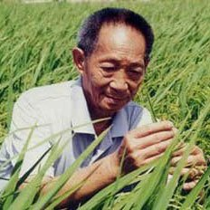
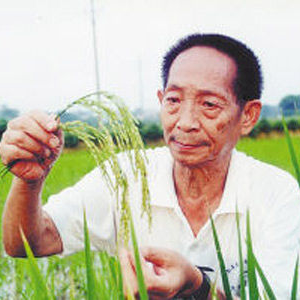
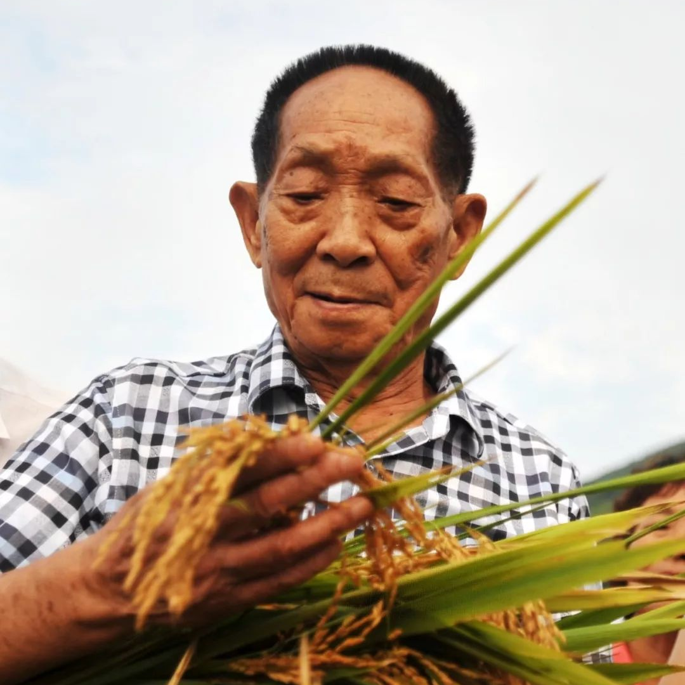

袁隆平
（1929年8月13日－2021年5月22日），男，汉族，江西德安人，中国杂交水稻育种专家，中国工程院院士和美国科学院外籍院士，于1960年代至1970年代对杂交水稻品种的研究，令中国大陆和世界各地的粮产增加，被誉为“杂交水稻之父”。
重要事件
- 1953年袁隆平毕业于西南农学院，分发到湖南安江农业学校；
-
1966年2月他在中国科学院《科学通报》于文革休刊前最后一期发表他第一篇论文；
- 1970－2000年代，在国家科委的支持下，袁隆平的水稻研究屡有突破；
- 2019年更获颁共和国勋章；
- 2020年任湖南农业大学名誉校长。
荣誉
| 时间 |
奖励名称 |
| 1981年6月 |
国家特等发明奖 |
| 1985年10月 |
创造与发明金质奖章（杰出发明家） |
| 1987年11月 |
科学奖 |
| 1988年3月 |
农学与营养奖 |
| 1991年11月 |
国家科技进步三等奖 |
| 1991年11月 |
国家科技进步三等奖 |
评价
2005年，袁隆平获选感动中国2004年度人物。 颁奖词为：
他是一位真正的耕耘者。当他还是一个乡村教师的时候，已经具有颠覆世界权威的胆识；
当他名满天下的时候，却仍然只是专注于田畴。
淡薄名利，一介农夫，播撒智慧，收获富足。
他毕生的梦想，就是让所有人远离饥饿。喜看稻菽千重浪，最是风流袁隆平！
田间照片



逝世
- 2021年3月10日，袁隆平在三亚杂交稻研究基地跌倒；
- 4月7日，转院至湖南长沙治疗；
-
5月22日13时07分，袁隆平因多器官功能衰竭逝世于长沙中南大学湘雅医院，享年91岁。